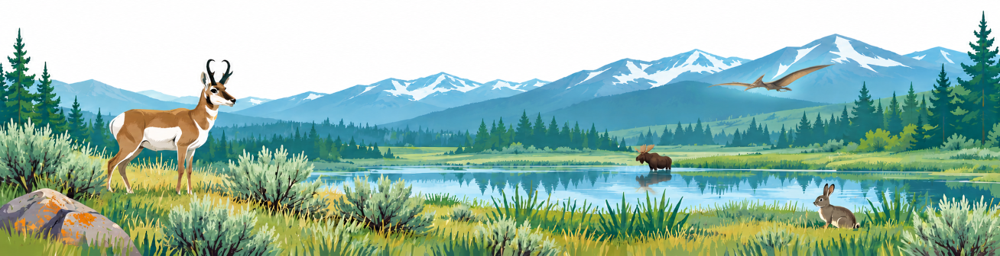

Scientific Evidence and Causal Inference
ZOO 4710-80 · J-Term II · 04-29 January 2027

Why do wildlife populations decline? What determines where species occur? Does habitat restoration increase biodiversity? Will removing an invasive species help native populations recover?
As ecologists, we want more than statistical associations or accurate predictions. We want to understand why ecological patterns occur and what we can do to change them. Yet, despite our increasingly sophisticated statistical tools, are we actually answering these causal questions?
Statistical models can reveal patterns, explain variation, and predict ecological outcomes. Yet, predicting what happens is not the same as knowing what would happen if we the system was perturbed. Statistical significance, superb predictive performance, or a model favored by AIC does not, by itself, establish cause and effect. Mistaking association for causation –what most ecologists do, believe it or not– can lead to misguided inference, including misguided conservation decisions.
This course explores the gap between what our analyses show and what we conclude from them. Through published studies, causal diagrams, and interactive investigations, you will learn to identify hidden assumptions, evaluate competing explanations, and determine which scientific conclusions the evidence actually supports.
Essential course information
| Course | ZOO 4710-80 (Special Topics) |
| CRN | 25371 |
| Credits | 3 |
| Term | J-Term II, January 4–29, 2027 |
| Format | Fully asynchronous online, with no scheduled class meetings |
| Instructor | Dr. Patrick Kelley (jkelle24@uwyo.edu) |
| Intended students | Zoology, Physiology, Wildlife and Fisheries Biology and Management (WFBM), Biology, and Environmental and Natural Resources (ENR) majors |
| Prerequisites | LIFE-1010 and one 2000-level LIFE course (e.g., LIFE-2022 or LIFE-2023); enrollment also possible with instructor permission |
The course features 10 asynchronous instructional modules, scheduled over January 4–15 (not including the intervening weekend, of course), before the spring semester begins. You can work at your own pace, with no scheduled class meetings.
The remainder of J-Term provides flexibility to complete the final project, an Evidence Audit project. You are encouraged to finish coursework before spring classes begin on January 19, but the official J-Term II period extends through January 29. Specific deadlines will be provided in WyoCourses.
What you will explore
- How scientists move from observations and statistical associations to causal explanations.
- Why prediction and causal inference are different questions, even when they use similar statistical methods.
- How causal diagrams (DAGs) reveal hidden assumptions, confounding, and other sources of bias.
- Why statistical significance, model fit, and AIC-based multi-model selection do not, by themselves, establish cause and effect.
- How research design, adjustment, and g-computation can help estimate causal effects under explicit assumptions.
- How to assess whether scientific evidence supports conservation interventions and environmental management decisions.
What does the course look like?
Each module is organized around a focused scientific question and practical investigation rather than a scheduled class meeting. All of these will be completed on your own at your own pace.
- Learn: Explore the key concepts through short video lectures, readings, and guided examples.
- Investigate: Examine real ecological studies, construct causal diagrams, and work through interactive challenges.
- Check your reasoning: Complete brief, low-stakes (i.e. low stress) quizzes and get explanatory feedback.
- Apply: Develop a cumulative Evidence Audit that critically evaluates the evidence and assumptions behind an ecological claim (that you pick!)
If you have an existing research projects, you are encouraged to apply course concepts to your own work, but no prior research experience or personal dataset is required to take full advantage of this course. Published studies, examples, and datasets will be provided.
Draft module calendar
| Date | Module | Topic |
|---|---|---|
| Jan 4 | 1 | Scientific Evidence: From Questions to Claims |
| Jan 5 | 2 | Ecological Data: Measurement, Sampling, and Detection |
| Jan 6 | 3 | Causal Diagrams and Confounding |
| Jan 7 | 4 | Mediators, Colliders, and Competing Explanations |
| Jan 8 | 5 | Selection Bias and Hidden Sources of Bias |
| Jan 11 | 6 | Research Design and Causal Identification |
| Jan 12 | 7 | Adjustment and G-Computation |
| Jan 13 | 8 | Causal Inference Across Time and Space |
| Jan 14 | 9 | When Models Mislead: Prediction, AIC, and Causation |
| Jan 15 | 10 | From Scientific Evidence to Environmental Decisions |
| Jan 16–18 | — | Opportunity to complete the final project before spring semester |
| Jan 19–29 | — | Flexible final project completion period |
These dates are general pacing milestones. These do not represent required synchronous meetings. There are no instructional modules scheduled after January 15.
Why does studying causality matter?
Ecology is fundamentally a science of why?. We want to understand why species occur where they do, what drives animal behavior, how organisms interact, and why ecosystems change over time. These questions are about causal processes; they are not simply statistical patterns.
The central challenge is that ecological systems are highly complex. Multiple processes can produce similar observed patterns, and the available evidence rarely distinguishes among them automatically. Understanding causality requires us to consider competing explanations, examine underlying assumptions, and recognize what additional evidence would help make sense of uncertainty.
These skills matter throughout ecology, from testing fundamental theories about the natural world to evaluating conservation strategies. An incorrect or poorly supported causal explanation can misdirect future research, reinforce flawed scientific conclusions, or lead to ineffective or irresponsible management decisions.
The most important question is not simply whether an explanation fits the data, but whether the evidence justifies believing it.
This course on causal inference helps you develop the ability to make that fundamental distinction.
Enrollment and questions
Find ZOO 4710-80 (CRN 25371) in the University of Wyoming registration system. If you have a question about prerequisites, suitability for your degree program, or permission to enroll, contact Dr. Patrick Kelley.
Download the course flyer (PDF)
This is a public course preview. Dates, assignments, assessment requirements, and policies are drafts until finalized in the official syllabus and WyoCourses. The instructional chapters will be added in December 2026; the course will be officially launched on 2 January 2027.